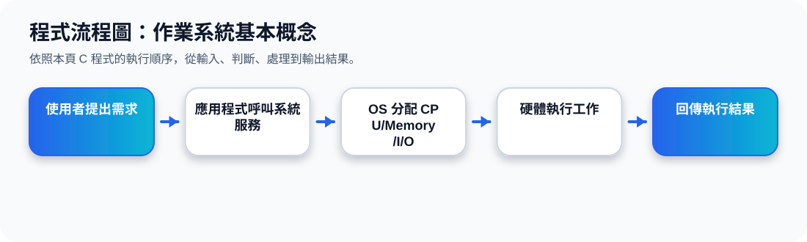

二、作業系統是什麼？
核心定義 作業系統是一個介於使用者與電腦硬體之間的中介程式。使用者通常不會直接控制 CPU、記憶體、硬碟或 I/O 裝置，而是透過應用程式提出需求，再由作業系統安排硬體完成工作。
作業系統的中介角色動畫
三、作業系統的三個主要目標
1、讓使用者容易解決問題
作業系統提供介面與服務，讓使用者不用理解硬體細節，也能執行程式、存取檔案與使用網路。
2、讓電腦系統方便使用
作業系統把複雜硬體包裝成較容易操作的功能，例如檔案系統、視窗介面、指令列與程式執行環境。
3、有效率地使用硬體
CPU、記憶體、硬碟與 I/O 裝置都是有限資源，作業系統必須安排誰先用、用多久、如何避免衝突。
四、電腦系統的四個組成
投影片將電腦系統分成四層：硬體、作業系統、應用程式、使用者。這個圖很重要，因為後面所有單元都在說明作業系統如何替不同程式與使用者管理硬體。
下層：Computer Hardware
包含 CPU、memory、I/O devices。硬體提供真正的運算與儲存能力，但本身不會決定資源如何分配。
中層：Operating System
控制並協調硬體使用，是整個系統的管理中心，也可被視為資源分配器與控制程式。
上層：Application Programs
例如 compiler、database system、video games、web browser。應用程式透過 OS 使用硬體。
最上層：Users
使用者可能是人、機器、其他電腦或網路上的服務。不同使用情境對 OS 的要求也不同。
五、OS 作為 Resource Allocator 與 Control Program
Resource Allocator 資源分配器
作業系統要管理所有資源，並在多個互相競爭的請求之間，做有效率且公平的分配。例如多個程式都想使用 CPU 或記憶體時，OS 要決定誰先執行。
Control Program 控制程式
作業系統也要控制程式執行，避免錯誤與不當使用。例如防止某個程式任意修改其他程式的記憶體，或不合理地獨佔硬體資源。
簡單記法：OS 一方面要「分配資源」，另一方面要「控制行為」。前者重視效率與公平，後者重視穩定與安全。
程式流程圖與流程講解
程式流程圖：作業系統基本概念

流程講解
可編輯 C 程式範例與線上編輯器
可編輯 C 程式：作業系統基本概念
這段程式依照上方流程圖設計，包含中文註解，適合貼到線上編輯器直接執行與修改。
程式題目完整教學內容
程式題目完整教學：作業系統基本概念
一、程式題目講解
用 C 程式把「使用者、應用程式、作業系統、硬體」之間的互動順序印出來，讓學生理解 OS 是中介者、資源分配者與控制程式。
核心觀念是分層架構與系統服務流程：使用者提出需求，應用程式向 OS 請求服務，OS 再安排硬體工作。
二、完整程式碼
以下程式碼可直接複製到 C 語言線上編譯器執行。程式中已加入中文註解，說明主要變數、判斷流程與輸出目的。
#include <stdio.h>
/*
主題 1：作業系統基本概念
功能：用簡單文字模擬 User → Application → OS → Hardware 的服務流程。
*/
int main(void) {
printf("User：我要開啟一個程式。\n");
printf("Application：向作業系統提出系統呼叫。\n");
printf("Operating System：檢查資源，分配 CPU、記憶體與 I/O。\n");
printf("Hardware：依照 OS 安排執行工作。\n");
printf("Operating System：把結果回傳給應用程式與使用者。\n");
return 0;
}三、程式執行結果
User：我要開啟一個程式。
Application：向作業系統提出系統呼叫。
Operating System：檢查資源，分配 CPU、記憶體與 I/O。
Hardware：依照 OS 安排執行工作。
Operating System：把結果回傳給應用程式與使用者。結果說明：核心觀念是分層架構與系統服務流程：使用者提出需求，應用程式向 OS 請求服務，OS 再安排硬體工作。 程式依照設定的資料與控制流程逐步輸出，因此可以從結果看到每個步驟的執行順序與狀態變化。
四、程式流程圖與流程圖說明
本頁上方已提供對應的程式流程圖，圖中以「開始、資料設定、條件判斷、重複處理、輸出結果、結束」呈現程式執行順序。
開始後依序輸出 User、Application、Operating System、Hardware 的處理步驟，最後回傳結果並結束程式。
五、重要函數與語法說明
printf() 用來輸出每一個角色的動作；return 0 表示 main() 正常結束。
六、整體說明
本題的學習重點是把作業系統概念轉成可觀察的 C 程式流程。學生應先理解題目概念，再對照程式碼、流程圖與執行結果，掌握變數設定、條件判斷、迴圈處理與輸出結果之間的關係。